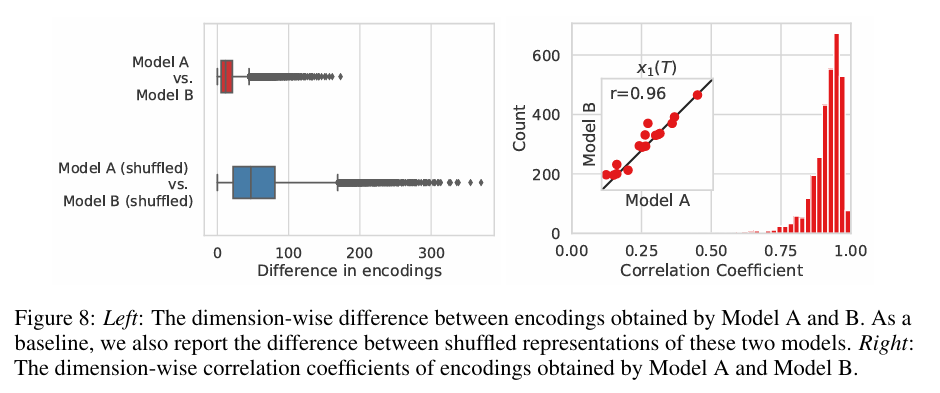

全文翻译
摘要
从数据中生成噪声很容易；而从噪声中生成数据则是生成式建模。我们提出一种随机微分方程（SDE），通过缓慢注入噪声，将复杂的数据分布平滑地转换为已知的先验分布；同时提出一种相应的逆向时间SDE，通过逐渐去除噪声，将先验分布转换回数据分布。关键在于，逆向时间SDE仅依赖于受扰动数据分布的时变梯度场（即分数）。利用基于分数的生成式建模的进展，我们可以用神经网络精确估计这些分数，并使用数值SDE求解器生成样本。我们表明，这个框架涵盖了先前基于分数的生成式建模和扩散概率建模方法，为新的采样过程和建模能力提供了可能。具体而言，我们引入了一个预测-校正框架，以纠正离散化逆向时间SDE演化过程中的误差。我们还推导了一个等效的神经常微分方程（ODE），它与SDE从相同分布中采样，但还能实现精确的似然计算，并提高采样效率。此外，我们提供了一种使用基于分数的模型解决逆问题的新方法，并通过类条件生成、图像修复和上色实验进行了验证。结合多种架构改进，我们在CIFAR - 10上的无条件图像生成任务中取得了突破性的成果，Inception分数达到9.89，FID为2.20，以2.99比特/维度的似然性创造了新纪录，并且首次从基于分数的生成模型中生成了高保真的1024×1024图像。
1 引言
两类成功的概率生成模型，一类是通过逐渐增加噪声来依次破坏训练数据，另一类是学习逆转这种破坏过程，从而构建数据的生成模型。基于朗之万动力学的分数匹配（SMLD）（Song & Ermon, 2019）在每个噪声尺度上估计分数（即对数概率密度关于数据的梯度），然后在生成过程中使用朗之万动力学从一系列逐渐减小的噪声尺度中进行采样。去噪扩散概率模型（DDPM）（Sohl-Dickstein等人, 2015; Ho等人, 2020）训练一系列概率模型来逆转噪声破坏的每一步，利用逆向分布的函数形式使训练易于处理。对于连续状态空间，DDPM的训练目标会在每个噪声尺度上隐式地计算分数。因此，我们将这两类模型统称为基于分数的生成模型。
基于分数的生成模型及相关技术（Bordes等人, 2017; Goyal等人, 2017; Du & Mordatch, 2019）已被证明在图像生成（Song & Ermon, 2019; 2020; Ho等人, 2020）、音频生成（Chen等人, 2020; Kong等人, 2020）、图生成（Niu等人, 2020）和形状生成（Cai等人, 2020）等方面是有效的。为了实现新的采样方法并进一步扩展基于分数的生成模型的能力，我们提出了一个统一的框架，通过随机微分方程（SDEs）对先前的方法进行了推广。
具体来说，我们不再使用有限数量的噪声分布来扰动数据，而是考虑根据扩散过程随时间演化的连续分布。这个过程将一个数据点逐渐扩散为随机噪声，并且由一个预先设定的SDE给出，该SDE不依赖于数据且没有可训练参数。通过逆转这个过程，我们可以将随机噪声平滑地塑造为数据以进行样本生成。关键是，这个逆向过程满足一个逆向时间SDE（Anderson, 1982），在已知边际概率密度的分数作为时间的函数的情况下，可以从正向SDE推导得出。因此，我们可以通过训练一个依赖时间的神经网络来估计分数，从而近似逆向时间SDE，然后使用数值SDE求解器生成样本。我们的核心思想如图1所示。
 |
|---|
| 图1：求解反向时间随机微分方程可得到一个基于分数的生成模型。将数据转换为简单的噪声分布可以通过连续时间随机微分方程来实现。如果我们知道每个中间时间步的分布分数 $\nabla_{x} \log p_{t}(x)$ ，那么这个随机微分方程就可以反向求解。 |
我们提出的框架在理论和实践上有以下贡献：
- 灵活的采样和似然计算：我们可以使用任何通用的SDE求解器对逆向时间SDE进行积分以进行采样。此外，我们提出了两种对一般SDE不可行的特殊方法：（i）预测-校正（PC）采样器，它将数值SDE求解器与基于分数的MCMC方法（如朗之万MCMC（Parisi, 1981）和HMC（Neal等人, 2011））相结合；（ii）基于概率流常微分方程（ODE）的确定性采样器。前者统一并改进了现有的基于分数模型的采样方法。后者允许通过黑箱ODE求解器进行快速自适应采样，通过潜在代码进行灵活的数据操作，具有唯一可识别的编码，并且值得注意的是，能够进行精确的似然计算。
- 可控生成：我们可以通过在训练期间不可用的信息进行条件设定来调节生成过程，因为条件逆向时间SDE可以从无条件分数中有效估计。这使得诸如类条件生成、图像修复、上色和其他逆问题等应用成为可能，所有这些都可以使用单个无条件基于分数的模型实现，而无需重新训练。
- 统一框架：我们的框架提供了一种统一的方式来探索和调整各种SDE，以改进基于分数的生成模型。SMLD和DDPM的方法可以作为两个不同SDE的离散化合并到我们的框架中。尽管最近有报道称DDPM（Ho等人, 2020）比SMLD（Song & Ermon, 2019; 2020）能实现更高质量的样本，但我们表明，通过我们框架所允许的更好的架构和新的采样算法，SMLD可以追平DDPM的效果——在CIFAR-10上，SMLD达到了新的最先进的Inception分数（9.89）和FID分数（2.20），并且首次从基于分数的模型中生成了高保真的1024×1024图像。此外，我们在框架内提出了一种新的SDE，在均匀去量化的CIFAR-10图像上实现了2.99比特/维度的似然值，为该任务创造了新纪录。
2 背景
2.1 基于朗之万动力学的去噪分数匹配（SMLD）
设$p_{\sigma}(\tilde{x} | x):=N(\tilde{x} ; x, \sigma^{2} I)$为扰动核，$p_{\sigma}(\tilde{x}):=\int p_{data }(x) p_{\sigma}(\tilde{x} | x) d x$，其中$p_{data }(x)$表示数据分布。考虑一系列正的噪声尺度$\sigma_{min }=\sigma_{1}<\sigma_{2}<\cdots<\sigma_{N}=\sigma_{max }$。通常，$\sigma_{min }$足够小，使得$p_{\sigma_{min }}(x) ≈p_{data }(x)$，而$\sigma_{max }$足够大，使得$p_{\sigma_{max }}(x) ≈N(x ; 0, \sigma_{max }^{2} I)$。Song和Ermon（2019）提出训练一个噪声条件分数网络（Noise Conditional Score Network，NCSN），记为$s_{\theta}(x, \sigma)$，其目标函数为去噪分数匹配（Vincent，2011）目标的加权和：
在数据充足且模型容量足够的情况下，最优的基于分数的模型 在时，几乎处处与$\nabla_{x} log p_{\sigma}(x)$相匹配。在采样时，Song和Ermon（2019）对每个$p_{\sigma_{i}}(x)$依次运行$M$步朗之万蒙特卡罗（Langevin MCMC）以获得样本：
其中$\epsilon_{i}>0$是步长，$z_{i}^{m}$是标准正态分布。上述过程从$i = N$开始，依次对$i = N - 1, \cdots, 1$进行，且$x_{N}^{0} \sim N(x | 0, \sigma_{max }^{2} I)$，当$i < N$时，$x_{i}^{0}=x_{i + 1}^{M}$。在某些正则条件下，当$M \to \infty$且对所有$i$都有$\epsilon_{i} \to 0$时，$x_{1}^{M}$成为来自$p_{\sigma_{min }}(x) ≈p_{data }(x)$的精确样本。
2.2 去噪扩散概率模型（DDPM）
Sohl-Dickstein等人（2015）；Ho等人（2020）考虑一系列正的噪声尺度$0<\beta_{1}, \beta_{2}, \cdots, \beta_{N}<1$。对于每个训练数据点$x_{0} \sim p_{data }(x)$，构建一个离散马尔可夫链$\{x_{0}, x_{1}, \cdots, x_{N}\}$，使得$p(x_{i} | x_{i - 1})=N(x_{i} ; \sqrt{1-\beta_{i}} x_{i - 1}, \beta_{i} I)$，因此$p_{\alpha_{i}}(x_{i} | x_{0})=N(x_{i} ; \sqrt{\alpha_{i}} x_{0},(1-\alpha_{i}) I)$，其中$\alpha_{i}:=\prod_{j = 1}^{i}(1-\beta_{j})$。与SMLD类似，我们可以将受扰动的数据分布表示为$p_{\alpha_{i}}(\tilde{x}):=\int p_{data }(x) p_{\alpha_{i}}(\tilde{x} | x)dx$。噪声尺度的设置使得$x_{N}$近似服从$N(0, I)$分布。逆向的变分马尔可夫链由$p_{\theta}(x_{i - 1} | x_{i})=N(x_{i - 1} ; \frac{1}{\sqrt{1-\beta_{i}}}(x_{i}+\beta_{i} s_{\theta}(x_{i}, i)), \beta_{i} I)$参数化，并使用证据下界（ELBO）的加权变体进行训练：
求解上述方程得到最优模型后，可以从开始，按照估计的逆向马尔可夫链生成样本：
我们将这种方法称为祖先采样（ancestral sampling），因为它相当于从图形模型$\prod_{i = 1}^{N} p_{\theta}(x_{i - 1} | x_{i})$进行祖先采样。这里描述的目标方程（3）是Ho等人（2020）中的$L_{simple }$，写成这种形式是为了更明显地展示它与方程（1）的相似性。与方程（1）一样，方程（3）也是去噪分数匹配目标的加权和，这意味着最优模型与受扰动数据分布的分数$\nabla_{x} log p_{\alpha_{i}}(x)$相匹配。值得注意的是，方程（1）和方程（3）中第$i$个求和项的权重，即$\sigma_{i}^{2}$和$(1-\alpha_{i})$，与相应的扰动核具有相同的函数形式：和。
3 基于随机微分方程的分数生成建模
在之前的方法中，用多个噪声尺度扰动数据是成功的关键。我们提议进一步将这个想法扩展到无穷多个噪声尺度，使得受扰动的数据分布会随着噪声增强，依据随机微分方程进行演化。图2展示了我们框架的概述。
3.1 用随机微分方程扰动数据
我们的目标是构建一个由连续时间变量 $t \in [0, T]$ 索引的扩散过程 $\{x(t)\}_{t = 0}^{T}$，使得 $x(0) \sim p_{0}$（我们有来自该分布的独立同分布样本数据集），并且 $x(T) \sim p_{T}$（我们可以高效地从这个分布生成样本）。换句话说，$p_{0}$ 是数据分布，$p_{T}$ 是先验分布。这个扩散过程可以建模为一个伊藤随机微分方程的解：
| 图2：基于随机微分方程的分数生成建模概述。我们可以用一个随机微分方程将数据映射到噪声分布（先验分布）（3.1节），并反向求解这个随机微分方程进行生成建模（3.2节）。我们也可以反向求解相关的概率流常微分方程（4.3节），这会产生一个确定性过程，从与随机微分方程相同的分布中采样。反向时间随机微分方程和概率流常微分方程都可以通过估计分数 $\nabla_{x}\log p_{t}(x)$ 得到（3.3节）。 |
其中 $w$ 是标准维纳过程（也称为布朗运动），$f(\cdot, t): \mathbb{R}^{d} \to \mathbb{R}^{d}$ 是一个向量值函数，称为 $x(t)$ 的漂移系数，$g(\cdot): \mathbb{R} \to \mathbb{R}$ 是一个标量函数，称为 $x(t)$ 的扩散系数。为了便于表述，我们假设扩散系数是一个标量（而不是 $d \times d$ 矩阵）并且不依赖于 $x$，但我们的理论可以推广到更一般的情况（见附录A）。只要系数在状态和时间上全局满足利普希茨条件，该随机微分方程就有唯一的强解（Øksendal, 2003）。此后，我们用 $p_{t}(x)$ 表示 $x(t)$ 的概率密度，用 $p_{st}(x(t)|x(s))$ 表示从 $x(s)$ 到 $x(t)$ 的转移核，其中 $0 \leq s < t \leq T$。
通常，$p_{T}$ 是一个无结构的先验分布，不包含 $p_{0}$ 的任何信息，比如具有固定均值和方差的高斯分布。有多种设计公式（5）中随机微分方程的方法，使其能将数据分布扩散为固定的先验分布。在3.4节中，我们会给出几个例子，它们是从SMLD和DDPM的连续推广中推导出来的。
3.2 通过反向随机微分方程生成样本
从 $x(T) \sim p_{T}$ 的样本出发，反向进行这个过程，我们可以得到 $x(0) \sim p_{0}$ 的样本。Anderson（1982）的一个重要结果表明，扩散过程的反向也是一个扩散过程，只不过是在时间上反向运行，由反向时间随机微分方程给出：
其中 $\overline{w}$ 是时间从 $T$ 到 $0$ 反向流动时的标准维纳过程，$dt$ 是一个无穷小的负时间步长。一旦知道了所有 $t$ 时刻每个边际分布的分数 $\nabla_{x}\log p_{t}(x)$，我们就可以从公式（6）推导出反向扩散过程，并对其进行模拟，从而从 $p_{0}$ 中采样。
3.3 估计随机微分方程的分数
分布的分数可以通过在样本上使用分数匹配（Hyvärinen, 2005; Song等人, 2019a）训练一个基于分数的模型来估计。为了估计 $\nabla_{x}\log p_{t}(x)$，我们可以通过对公式（1）和（3）进行连续推广，训练一个依赖于时间的基于分数的模型 $s_{\theta}(x, t)$：
这里 $\lambda: [0, T] \to \mathbb{R}_{>0}$ 是一个正加权函数，$t$ 是在 $[0, T]$ 上均匀采样得到的，$x(0) \sim p_{0}(x)$，$x(t) \sim p_{0t}(x(t)|x(0))$。在数据充足和模型容量足够的情况下，分数匹配可以确保公式（7）的最优解 $s_{\theta *}(x, t)$，对于几乎所有的 $x$ 和 $t$，都等于 $\nabla_{x}\log p_{t}(x)$ 。与SMLD和DDPM类似，我们通常可以选择 $\lambda \propto 1 / \mathbb{E}[\left|\nabla_{x(t)}\log p_{0t}(x(t)|x(0))\right|_{2}^{2}]$ 。需要注意的是，公式（7）使用的是去噪分数匹配，但其他分数匹配目标，如切片分数匹配（Song等人, 2019a）和有限差分分数匹配（Pang等人, 2020）在这里也同样适用。
通常，我们需要知道转移核 $p_{0t}(x(t)|x(0))$ 才能高效地求解公式（7）。当 $f(\cdot, t)$ 是仿射函数时，转移核总是高斯分布，其均值和方差通常可以用标准方法得到封闭形式的解（见Särkkä和Solin (2019) 中的5.5节）。对于更一般的随机微分方程，我们可以通过求解柯尔莫哥洛夫前向方程（Øksendal, 2003）来得到 $p_{0t}(x(t)|x(0))$ 。或者，我们可以模拟随机微分方程从 $p_{0t}(x(t)|x(0))$ 中采样，并在公式（7）中用切片分数匹配替代去噪分数匹配进行模型训练，这样可以绕过对 $\nabla_{x(t)}\log p_{0t}(x(t)|x(0))$ 的计算（见附录A）。
3.4 示例：VE、VP随机微分方程及其他
SMLD和DDPM中使用的噪声扰动可以看作是两种不同随机微分方程的离散化形式。下面我们简要讨论一下，更多细节见附录B。
当总共使用 $N$ 个噪声尺度时，SMLD的每个扰动核 $p_{\sigma_{i}}(x|x_{0})$ 对应于以下马尔可夫链中 $x_{i}$ 的分布：
其中 $z_{i - 1} \sim N(0, I)$，为简化符号，我们引入了 $\sigma_{0} = 0$ 。当 $N \to \infty$ 时，$\sigma_{i}$ 变成一个函数 $\sigma(t)$，$z_{i}$ 变成 $z(t)$，马尔可夫链 $\{x_{i}\}_{i = 1}^{N}$ 变成一个连续随机过程 $\{x(t)\}_{t = 0}^{1}$，这里我们使用连续时间变量 $t \in [0, 1]$ 进行索引，而不是整数 $i$ 。这个过程 $\{x(t)\}_{t = 0}^{1}$ 由以下随机微分方程给出：
同样地，对于DDPM的扰动核 $\{p_{\alpha_{i}}(x|x_{0})\}_{i = 1}^{N}$，其离散马尔可夫链为：
当 $N \to \infty$ 时，公式（10）收敛到以下随机微分方程：
因此，SMLD和DDPM中使用的噪声扰动分别对应于公式（9）和（11）中随机微分方程的离散化。有趣的是，当 $t \to \infty$ 时，公式（9）中的随机微分方程总是产生方差爆炸的过程，而公式（11）中的随机微分方程在初始分布具有单位方差时，会产生方差固定为1的过程（证明见附录B）。由于这种差异，我们将公式（9）称为方差爆炸（VE）随机微分方程，将公式（11）称为方差保持（VP）随机微分方程。
受VP随机微分方程的启发，我们提出了一种新型的随机微分方程，在似然性方面表现尤为出色（见4.3节），其表达式为：
当使用相同的 $\beta(t)$ 并从相同的初始分布开始时，公式（12）所诱导的随机过程的方差在每个中间时间步都始终受到VP随机微分方程的限制（证明见附录B）。因此，我们将公式（12）命名为亚VP随机微分方程。
由于VE、VP和亚VP随机微分方程都具有仿射漂移系数，它们的扰动核 $p_{0t}(x(t)|x(0))$ 都是高斯分布，可以使用Särkkä和Solin (2019) 中的公式（5.50）和（5.51）进行计算：
因此，这里介绍的所有随机微分方程都可以用公式（7）中的目标函数进行高效训练。
4 求解反向随机微分方程
训练完一个依赖时间的基于分数的模型 $s_{\theta}$ 后，我们可以用它构建反向时间随机微分方程，然后用数值方法对其进行模拟，从 $p_{0}$ 中生成样本。
| 表 1：CIFAR-10 数据集上不同反向时间随机微分方程求解器的比较。阴影区域是在相同计算量（分数函数评估次数）下获得的结果。报告的是五次采样运行的平均值和标准差。“P1000” 或 “P2000”：分别表示使用 1000 步和 2000 步的仅预测采样器；“C2000”：使用 2000 步的仅校正采样器；“PC1000”：使用 1000 步预测和 1000 步校正的预测 - 校正（PC）采样器 |
4.1 通用数值随机微分方程求解器
数值求解器能给出随机微分方程的近似轨迹。有许多通用的数值方法可用于求解随机微分方程，如欧拉 - 丸山法（Euler-Maruyama）和随机龙格 - 库塔法（stochastic Runge-Kutta）（Kloeden & Platen, 2013），它们对应于对随机动力学的不同离散化方式。我们可以将这些方法中的任何一种应用于反向时间随机微分方程来生成样本。
DDPM的采样方法——祖先采样（公式(4)），实际上对应于反向时间VP随机微分方程（公式(11)）的一种特殊离散化（见附录E）。然而，为新的随机微分方程推导祖先采样规则可能并不容易。为了解决这个问题，我们提出了反向扩散采样器（详见附录E），它对反向时间随机微分方程的离散化方式与正向随机微分方程相同，因此，只要知道正向离散化方式，就可以很容易地推导出来。如表1所示，在CIFAR-10数据集上，反向扩散采样器对于SMLD和DDPM模型的表现都略优于祖先采样（DDPM类型的祖先采样也适用于SMLD模型，见附录F）。
4.2 预测-校正采样器
与一般的随机微分方程不同，我们拥有额外信息来改进求解结果。由于我们有一个基于分数的模型 $s_{\theta^{*}}(x, t) \approx \nabla_{x}\log p_{t}(x)$，我们可以采用基于分数的马尔可夫链蒙特卡罗（MCMC）方法，如朗之万MCMC（Parisi, 1981; Grenander & Miller, 1994）或哈密顿蒙特卡罗（HMC）（Neal等人, 2011），直接从 $p_{t}$ 中采样，并校正数值随机微分方程求解器的解。
具体来说，在每个时间步，数值随机微分方程求解器首先给出下一个时间步样本的估计值，起到 “预测器” 的作用。然后，基于分数的MCMC方法校正估计样本的边际分布，起到 “校正器” 的作用。这个想法类似于预测-校正方法（一种用于求解方程组的数值延拓技术，Allgower & Georg, 2012），我们也将这种混合采样算法命名为预测-校正（PC）采样器。伪代码和完整描述见附录G。PC采样器推广了SMLD和DDPM原来的采样方法：前者使用恒等函数作为预测器，退火朗之万动力学作为校正器；后者使用祖先采样作为预测器，恒等函数作为校正器。
我们在使用公式(1)和(3)给出的原始离散目标训练的SMLD和DDPM模型上测试PC采样器（见附录G中的算法2和算法3），这展示了PC采样器与用固定数量噪声尺度训练的基于分数的模型的兼容性。我们在表1中总结了不同采样器的性能，其中概率流是将在4.3节讨论的一种预测器。附录G给出了详细的实验设置和更多结果。我们观察到，我们的反向扩散采样器总是优于祖先采样，并且在相同计算量下，仅使用校正器的方法（C2000）比其他竞争方法（P2000、PC1000）表现更差（实际上，为了达到与其他采样器相同的性能，每个噪声尺度我们需要更多的校正器步骤，因此计算量更大）。对于所有预测器，每个预测器步骤添加一个校正器步骤（PC1000）虽然会使计算量翻倍，但总能提高样本质量（与P1000相比）。此外，它通常比不添加校正器但将预测器步骤数量翻倍（P2000）的效果更好，对于SMLD/DDPM模型，在P2000方法中，我们必须以一种临时的方式在噪声尺度之间进行插值（详见附录G）。在附录G的图9中，我们还对用公式(7)中的连续目标在256×256的LSUN图像上训练的模型和VE随机微分方程进行了定性比较，结果表明，在计算量相当的情况下，使用适当数量的校正器步骤时，PC采样器明显优于仅使用预测器的采样器。
 |
|
|---|---|
| *表 2：CIFAR-10 数据集上的负对数似然（NLL）和 FID（常微分方程） | 表 3：CIFAR-10 数据集上的样本质量。* |
4.3 概率流以及与神经常微分方程的联系
基于分数的模型为求解反向时间随机微分方程提供了另一种数值方法。对于所有扩散过程，都存在一个相应的确定性过程，其轨迹与随机微分方程具有相同的边际概率密度 $\{p_{t}(x)\}_{t = 0}^{T}$ 。这个确定性过程满足一个常微分方程（更多细节见附录D.1）：
一旦知道了分数，就可以从随机微分方程推导出这个常微分方程。我们将公式(13)中的常微分方程称为概率流常微分方程。当分数函数由依赖时间的基于分数的模型（通常是神经网络）近似时，这就是神经常微分方程的一个例子（Chen等人, 2018）。
- 精确似然计算：利用与神经常微分方程的联系，我们可以通过瞬时变量变换公式（Chen等人, 2018）计算公式(13)定义的密度。这使我们能够计算任何输入数据的精确似然（详细信息见附录D.2）。例如，我们在表2中报告了CIFAR-10数据集上以比特/维度为单位测量的负对数似然（NLL）。我们对均匀去量化的数据计算对数似然，并且只与以相同方式评估的模型进行比较（不包括使用变分去量化（Ho等人, 2019）或离散数据评估的模型），但DDPM（$(L / L_{simple})$ ）除外，其ELBO值（标注有*）是在离散数据上报告的。主要结果如下：(i) 对于Ho等人（2020）中的相同DDPM模型，由于我们的似然是精确的，所以得到了比ELBO更好的比特/维度结果；(ii) 使用相同的架构，我们用公式(7)中的连续目标训练了另一个DDPM模型（即DDPM cont.），这进一步提高了似然；(iii) 与VP随机微分方程相比，使用亚VP随机微分方程时，我们总是能得到更高的似然；(iv) 通过改进架构（即DDPM++ cont.，详见4.4节）和亚VP随机微分方程，即使不进行最大似然训练，我们也能在均匀去量化的CIFAR-10上创造2.99比特/维度的新记录。
- 操纵潜在表示：通过对公式(13)进行积分，我们可以将任何数据点 $x(0)$ 编码到潜在空间 $x(T)$ 中。解码可以通过对反向时间随机微分方程对应的常微分方程进行积分来实现。与其他可逆模型（如神经常微分方程和归一化流，Dinh等人, 2016; Kingma & Dhariwal, 2018）一样，我们可以操纵这个潜在表示进行图像编辑，如插值和温度缩放（见图3和附录D.4）。
- 唯一可识别编码：与目前大多数可逆模型不同，我们的编码是唯一可识别的。这意味着在有足够的训练数据、模型容量和优化精度的情况下，输入的编码由数据分布唯一确定（Roeder等人, 2020）。这是因为我们的正向随机微分方程（公式(5)）没有可训练参数，并且在分数估计完美的情况下，其相关的概率流常微分方程（公式(13)）会提供相同的轨迹。我们在附录D.5中对这一属性进行了更多的实证验证。
- 高效采样：与神经常微分方程一样，我们可以通过从不同的最终条件 $x(T) \sim p_{T}$ 求解公式(13)来采样 $x(0) \sim p_{0}$ 。使用固定的离散化策略，我们可以生成具有竞争力的样本，特别是与校正器结合使用时（表1，“概率流采样器”，详见附录D.3）。使用黑盒常微分方程求解器（Dormand & Prince, 1980）不仅能生成高质量的样本（表2，详见附录D.4），还能让我们在准确性和效率之间进行明确的权衡。在允许更大误差容限的情况下，函数评估的次数可以减少90%以上，且不影响样本的视觉质量（图3）。
 |
|---|
| 图 3：概率流常微分方程使得在改变数值精度时能够使用自适应步长进行快速采样（左图），并且在不损害质量的情况下减少了分数函数评估的次数（中图）。从潜在空间到图像的可逆映射允许进行插值操作（右图） |
4.4 架构改进
我们探索了几种适用于基于分数的模型的新架构设计，这些模型同时使用VE和VP随机微分方程（详见附录H），我们用与SMLD/DDPM中相同的离散目标训练这些模型。由于VP和亚VP随机微分方程的相似性，我们直接将适用于VP随机微分方程的架构应用于亚VP随机微分方程。我们为VE随机微分方程设计的最优架构名为NCSN++，在使用PC采样器的情况下，在CIFAR-10上达到了2.45的FID分数；而我们为VP随机微分方程设计的最优架构DDPM++，达到了2.78的FID分数。
通过切换到公式(7)中的连续训练目标并增加网络深度，我们可以进一步提高所有模型的样本质量。得到的架构在表3中分别表示为NCSN++ cont.和DDPM++ cont.，分别对应于VE和VP/亚VP随机微分方程。表3中报告的结果是训练过程中FID分数最小的检查点的结果，样本由PC采样器生成。相比之下，表2中的FID分数和NLL值是最后一个训练检查点的结果，样本通过黑盒常微分方程求解器获得。如表3所示，VE随机微分方程通常能提供比VP/亚VP随机微分方程更好的样本质量，但我们也通过实验观察到，其似然比VP/亚VP随机微分方程对应的似然更差。这表明从业者可能需要针对不同的领域和架构尝试不同的随机微分方程。
我们在样本质量方面表现最佳的模型NCSN++ cont. (deep, VE)，将网络深度翻倍，在CIFAR-10的无条件生成任务中，Inception分数和FID分数均创下新纪录。令人惊讶的是，我们在不需要标签数据的情况下，获得了比之前最好的条件生成模型更好的FID分数。通过所有改进，我们还首次从基于分数的模型中获得了CelebA-HQ 1024×1024的高保真样本（见附录H.3）。在似然方面表现最佳的模型DDPM++ cont. (deep, sub-VP)，同样将网络深度翻倍，使用公式(7)中的连续目标，达到了2.99比特/维度的对数似然。据我们所知，这是均匀去量化的CIFAR-10上的最高似然。
5 可控生成
 |
|---|
| 图4：左图为32×32的CIFAR-10数据集上的类别条件样本。前四行是汽车，后四行是马。右图为256×256的LSUN数据集上的图像修复（前两行）和上色（后两行）结果。第一列是原始图像，第二列是掩码/灰度图像，其余列是采样得到的图像补全或上色结果。 |
我们的框架具有连续结构，这不仅使我们能够从 $p_0$ 中生成数据样本，而且在已知 $p_t(y|x(t))$ 时，还能从 $p_0(x(0)|y)$ 中生成样本。对于如公式（5）所示的正向随机微分方程，我们可以从 $p_T(x(T)|y)$ 出发，通过求解条件反向时间随机微分方程来从 $p_t(x(t)|y)$ 中采样：
一般来说，一旦我们得到正向过程的梯度估计 $\nabla_x \log p_t(y|x(t))$，就可以使用公式（14），基于分数的生成模型来求解一大类逆问题。在某些情况下，可以训练一个单独的模型来学习正向过程 $\log p_t(y|x(t))$ 并计算其梯度。否则，我们可以利用启发式方法和领域知识来估计梯度。在附录I.4中，我们提供了一种广泛适用的方法，无需训练辅助模型即可获得此类估计。
我们考虑使用这种方法进行可控生成的三个应用：类别条件生成、图像修复和上色。当 $y$ 表示类别标签时，我们可以训练一个依赖时间的分类器 $p_t(y|x(t))$ 用于类别条件采样。由于正向随机微分方程易于处理，我们可以通过先从数据集中采样 $(x(0), y)$，然后采样 $x(t) \sim p_{0t}(x(t)|x(0))$，轻松为依赖时间的分类器创建训练数据 $(x(t), y)$ 。之后，我们可以像公式（7）那样，使用不同时间步的交叉熵损失的混合来训练依赖时间的分类器 $p_t(y|x(t))$ 。我们在图4（左）中展示了类别条件CIFAR-10样本，更多细节和结果见附录I。
图像修复是条件采样的一个特殊情况。假设我们有一个不完整的数据点 $y$，其中只有某个子集 $\Omega(y)$ 是已知的。图像修复就相当于从 $p(x(0)|\Omega(y))$ 中采样，我们可以使用无条件模型来完成（见附录I.2）。上色是图像修复的一个特殊情况，只是已知的数据维度是相关联的。我们可以通过正交线性变换将这些数据维度解耦，在变换后的空间中进行修复，然后再将所有内容变换回原始图像空间（详见附录I.3）。图4（右）展示了使用无条件依赖时间的基于分数的模型实现的图像修复和上色结果。
6 结论
我们提出了一个基于随机微分方程（SDE）的分数生成建模框架。我们的工作有助于更好地理解现有方法，推动新采样算法的发展，实现精确的似然计算、唯一可识别的编码、潜在代码的操纵，并为分数生成模型家族带来新的条件生成能力。
虽然我们提出的采样方法改进了结果并实现了更高效的采样，但在相同数据集上，它们的采样速度仍比生成对抗网络（GANs，Goodfellow等人，2014）慢。探索如何将分数生成模型的稳定学习与GANs等隐式模型的快速采样相结合，仍然是一个重要的研究方向。此外，在使用分数函数时，可用的采样器种类繁多，会引入大量超参数。未来的工作可以探索更有效的方法来自动选择和调整这些超参数，并更深入地研究各种采样器的优缺点。
A 更一般随机微分方程的框架
在正文部分，我们基于一个简化的随机微分方程（SDE）（公式（5））介绍了我们的框架，在该方程中扩散系数与$x(t)$无关。事实证明，我们的框架可以扩展到更一般的扩散系数情况。我们可以考虑以下形式的随机微分方程：
其中，$f(\cdot, t): \mathbb{R}^{d} \to \mathbb{R}^{d}$，$G(\cdot, t): \mathbb{R}^{d} \to \mathbb{R}^{d×d}$。在本文中，我们始终采用伊藤（Itô）对随机微分方程的解释。
根据（Anderson, 1982），反向随机微分方程为（对比公式（6））：
这里我们定义$F(x): f(x)$，对于矩阵值函数，$\nabla \cdot F(x) := (\nabla \cdot f^{1}(x), \nabla \cdot f^{2}(x), \cdots, \nabla \cdot f^{d}(x))^{T}$。
与公式（15）对应的概率流常微分方程（ODE）具有以下形式（对比公式（13），详细推导见附录D.1）：
最后，对于具有一般随机微分方程（公式（15））的条件生成，我们可以求解以下条件反向随机微分方程（对比公式（14），详细内容见附录I）：
当随机微分方程的漂移系数和扩散系数不是仿射函数时，可能难以通过解析形式计算转移核$p_{0t}(x(t) | x(0))$。这给基于分数的模型训练带来了困难，因为公式（7）需要知道$\nabla_{x(t)}\log p_{0t}(x(t) | x(0))$。为了克服这个困难，我们可以用其他不需要计算$\nabla_{x(t)}\log p_{0t}(x(t) | x(0))$的高效分数匹配变体来替代公式（7）中的去噪分数匹配。例如，当使用切片分数匹配（Song等人，2019a）时，我们的训练目标公式（7）变为：
其中，$\lambda: [0, T] \to \mathbb{R}^{+}$是一个正加权函数，$t \sim U(0, T)$，$\mathbb{E}[v] = 0$且$\text{Cov}[v] = I$。我们总是可以模拟随机微分方程从$p_{0t}(x(t) | x(0))$中采样，并求解公式（19）来训练依赖于时间的基于分数的模型$s_{\theta}(x, t)$。
B 方差爆炸（VE）、方差保持（VP）和子VP随机微分方程
下面我们给出详细推导，以表明分数匹配与朗之万动力学（SMLD）和去噪扩散概率模型（DDPM）中的噪声扰动分别是方差爆炸（VE）和方差保持（VP）随机微分方程的离散化形式。此外，我们还引入了子VP随机微分方程，这是对VP随机微分方程的一种改进，通常在样本质量和似然性方面都能取得更好的性能。
首先，在SMLD中使用总共N个噪声尺度时，每个扰动核$p_{\sigma_{i}}(x | x_{0})$都可以从以下马尔可夫链推导得出：
其中，$z_{i - 1} \sim N(0, I)$，$x_{0} \sim p_{data}$，为简化符号，我们引入$\sigma_{0}=0$。当$N \to \infty$时，马尔可夫链$\{x_{i}\}_{i = 1}^{N}$变成一个连续随机过程$\{x(t)\}_{t = 0}^{1}$，$\{\sigma_{i}\}_{i = 1}^{N}$变成一个函数$\sigma(t)$，$z_{i}$变成$z(t)$，这里我们使用连续时间变量$t \in [0, 1]$进行索引，而不是整数$i \in \{1, 2, \cdots, N\}$。令$x(\frac{i}{N}) = x_{i}$，$\sigma(\frac{i}{N}) = \sigma_{i}$，$z(\frac{i}{N}) = z_{i}$，对于$i = 1, 2, \cdots, N$。当$\Delta t=\frac{1}{N}$且$t \in \{0, \frac{1}{N}, \cdots, \frac{N - 1}{N}\}$时，我们可以将上述公式改写为：
当$\Delta t \ll 1$时，上式近似成立。在$\Delta t \to 0$的极限情况下，它收敛到：
这就是VE随机微分方程。
对于DDPM中使用的扰动核$\{p_{\alpha_{i}}(x | x_{0})\}_{i = 1}^{N}$，其离散马尔可夫链为：
其中，$z_{i - 1} \sim N(0, I)$。为了得到当$N \to \infty$时这个马尔可夫链的极限，我们定义一组辅助噪声尺度$\{\bar{\beta}_{i}=N\beta_{i}\}_{i = 1}^{N}$，并将上述公式改写为：
当$N \to \infty$时，$\{\bar{\beta}_{i}\}_{i = 1}^{N}$变成一个由$t \in [0, 1]$索引的函数$\beta(t)$。令$\beta(\frac{i}{N})=\bar{\beta}_{i}$，$x(\frac{i}{N}) = x_{i}$，$z(\frac{i}{N}) = z_{i}$。当$\Delta t=\frac{1}{N}$且$t \in \{0, 1, \cdots, \frac{N - 1}{N}\}$时，我们可以将马尔可夫链改写为：
当$\Delta t \ll 1$时，上述近似等式成立。因此，在$\Delta t \to 0$的极限情况下，该式收敛到以下VP随机微分方程：
到目前为止，我们已经证明了SMLD和DDPM中使用的噪声扰动分别对应于VE和VP随机微分方程的离散化。VE随机微分方程在$t \to \infty$时总是产生方差爆炸的过程，相比之下，VP随机微分方程产生的过程方差有界。此外，当$p(x(0))$具有单位方差时，该过程在所有$t \in [0, \infty)$上都具有恒定的单位方差。由于VP随机微分方程具有仿射漂移和扩散系数，我们可以使用Särkkä和Solin（2019）中的公式（5.51）得到一个常微分方程来描述方差的演化：
其中，$\sum_{VP}(t) := \text{Cov}[x(t)]$表示服从VP随机微分方程的$\{x(t)\}_{t = 0}^{1}$的协方差。求解这个常微分方程，我们得到：
由此可以明显看出，给定$\sum_{VP}(0)$，方差$\sum_{VP}(t)$总是有界的。而且，如果$\sum_{VP}(0)=I$，则$\sum_{VP}(t) \equiv I$。由于这种差异，我们将公式（9）命名为方差爆炸（VE）随机微分方程，将公式（11）命名为方差保持（VP）随机微分方程。
受VP随机微分方程的启发，我们提出了一种新的随机微分方程，称为子VP随机微分方程，即：
通过标准推导，可以直接证明VP和子VP随机微分方程的$\mathbb{E}[x(t)]$是相同的；子VP随机微分方程的方差函数不同，为：
其中，$\sum_{sub - VP}(t) := \text{Cov}[x(t)]$表示通过求解公式（27）得到的过程$\{x(t)\}_{t = 0}^{1}$的协方差。此外，我们观察到：（i）对于所有$t \geq 0$，当$\sum_{sub - VP}(0)=\sum_{VP}(0)$且$\beta(s)$相同时，$\sum_{sub - VP}(t) \leq \sum_{VP}(t)$；（ii）如果$\lim_{t \to \infty}\int_{0}^{t}\beta(s)ds=\infty$，则$\lim_{t \to \infty}\sum_{sub - VP}(t)=\lim_{t \to \infty}\sum_{VP}(t)=I$。前者就是我们将公式（27）命名为子VP随机微分方程的原因——其方差总是由相应的VP随机微分方程的方差上界约束。后者证明了子VP随机微分方程在基于分数的生成模型中的适用性，因为在适当条件下，它可以像VP随机微分方程一样将任何数据分布扰动为标准高斯分布。VE、VP和子VP随机微分方程都具有仿射漂移系数，因此，它们的扰动核$p_{0t}(x(t) | x(0))$都是高斯分布，可以使用Särkkä和Solin（2019）中的公式（5.50）和（5.51）计算：
因此，这里介绍的所有随机微分方程都可以使用公式（7）中的目标函数进行高效训练。
C 实际应用中的随机微分方程
下面我们讨论方差爆炸（VE）和方差保持（VP）随机微分方程（SDE）的具体实例，其离散化形式可得到分数匹配与朗之万动力学（SMLD）和去噪扩散概率模型（DDPM），同时介绍我们在实验中使用的具体子VP随机微分方程。
在SMLD中，噪声尺度$\{\sigma_{i}\}_{i = 1}^{N}$通常是一个几何序列，其中$\sigma_{min}$固定为0.01，$\sigma_{max}$取值范围是[0, 1]。由于$\{\sigma_{i}\}_{i = 1}^{N}$是几何序列，根据Song和Ermon（2020）中的方法1，我们有$\sigma(\frac{i}{N})=\sigma_{i}=\sigma_{min}(\frac{\sigma_{max}}{\sigma_{min}})^{\frac{i - 1}{N - 1}}$，$i = 1, 2, \cdots, N$。通常，SMLD模型会对图像输入进行归一化处理。当$N \to \infty$时，对于$t \in (0, 1]$，我们有$\sigma(t)=\sigma_{min}(\frac{\sigma_{max}}{\sigma_{min}})^{t}$ 。相应的VE随机微分方程为：
其扰动核可通过公式（29）推导得出：
当$t = 0$时存在一个微妙之处：根据定义，$\sigma(0)=\sigma_{0}=0$（遵循公式（20）中的约定），但$\sigma(0^{+}):=\lim_{t \to 0^{+}}\sigma(t)=\sigma_{min} \neq 0$。换句话说，SMLD中的$\sigma(t)$不可微，因为$\sigma(0) \neq \sigma(0^{+})$，这导致公式（21）中的VE随机微分方程在$t = 0$时无定义。在实际应用中，我们通过在$t \in [\epsilon, 1]$范围内求解随机微分方程及其相关的概率流常微分方程（ODE）来避开这个问题，在VE随机微分方程实验中我们取$\epsilon = 10^{-5}$。
对于DDPM模型，$\{\beta_{i}\}_{i = 1}^{N}$通常是一个等差数列，其中$\beta_{i}=\frac{\bar{\beta}_{min}}{N}+\frac{i - 1}{N(N - 1)}(\bar{\beta}_{max}-\bar{\beta}_{min})$，$i = 1, 2, \cdots, N$。因此，当$N \to \infty$时，对于$t \in [0, 1]$，$\beta(t)=\bar{\beta}_{min}+t(\bar{\beta}_{max}-\bar{\beta}_{min})$。这对应于以下VP随机微分方程的实例：
其中$x(0) \sim p_{data}(x)$ 。在我们的实验中，为了与Ho等人（2020）的设置相匹配，我们令$\bar{\beta}_{min}=0.1$，$\bar{\beta}_{max}=20$。其扰动核为：
对于DDPM，相应的VP随机微分方程不存在不连续问题，但在$t = 0$时，由于$x(t)$的方差在$t \to 0$时趋近于0，训练和采样会存在数值不稳定问题。因此，与VE随机微分方程一样，我们将计算限制在$t \in [\epsilon, 1]$，其中$\epsilon > 0$。在采样时，我们选择$\epsilon = 10^{-3}$，这样VP随机微分方程中$x(\epsilon)$的方差与DDPM中$x_{1}$的方差相匹配；在训练和似然计算时，我们采用$\epsilon = 10^{-5}$，根据经验，这能得到更好的结果。
作为对我们将随机微分方程推广到SMLD和DDPM的合理性检验，我们在图5中比较了随机微分方程的扰动核和原始离散马尔可夫链的扰动核。SMLD和DDPM模型都使用$N = 1000$个噪声尺度。对于SMLD，由于定义上均值相同，我们只需要比较扰动核的方差。对于DDPM，我们比较均值的缩放因子和方差。如图5所示，原始SMLD和DDPM模型的离散扰动核与从VE和VP随机微分方程推导得到的扰动核非常吻合。
| 图5：离散时间扰动核和我们的连续推广几乎完全匹配。(a)比较SMLD和VE随机微分方程扰动核的方差；(b)比较DDPM和VP随机微分方程扰动核均值的缩放因子；(c)比较DDPM和VP随机微分方程扰动核的方差。 |
对于子VP随机微分方程，我们使用与VP随机微分方程完全相同的$\beta(t)$。这导致以下扰动核：
我们也将数值计算限制在与VP随机微分方程相同的区间$[\epsilon, 1]$内。
从经验上看，我们发现较小的$\epsilon$通常会为所有随机微分方程带来更好的似然值。在采样时，使用合适的$\epsilon$对于获得更好的Inception分数和FID至关重要，尽管不同$\epsilon$下的样本在人眼看来视觉效果相同。
D 概率流ODE
D.1 推导
概率流常微分方程（ODE）的想法受到Maoutsa等人（2020）的启发，在该文献中可以找到一个简化案例的推导过程。下面我们给出公式（17）中完整通用常微分方程的推导。
考虑公式（15）中的随机微分方程，其形式如下：
其中，$f(\cdot, t): \mathbb{R}^{d} \to \mathbb{R}^{d}$，$G(\cdot, t): \mathbb{R}^{d} \to \mathbb{R}^{d×d}$ 。边际概率密度$p_{t}(x(t))$根据科尔莫戈罗夫向前方程（福克 - 普朗克方程）（Øksendal，2003）演化：
我们可以很容易地重写公式（35）得到：
注意到：
基于此，我们可以继续重写公式（36）得到：
我们定义：
观察公式（37），我们发现它等于以下随机微分方程（其中$\tilde{G}(x, t): = 0$ ）的科尔莫戈罗夫向前方程（在这种情况下，科尔莫戈罗夫向前方程也称为刘维尔方程）：
这本质上是一个常微分方程：
与公式（17）给出的概率流常微分方程相同。因此，我们证明了公式（17）中的概率流常微分方程诱导出与公式（15）中的随机微分方程相同的边际概率密度$p_{t}(x)$。
D.2 似然计算
当我们用时间相关的分数模型 $s_{\theta}(x, t)$ 替换分数 $\nabla_{x} \log p_{t}(x)$ 时，公式（17）中的概率流常微分方程具有以下形式：
利用瞬时变量变换公式（Chen等人，2018），我们可以通过以下公式计算 $p_{0}(x)$ 的对数似然：
其中，作为时间 $t$ 的函数的随机变量 $x(t)$ 可通过求解公式（38）中的概率流常微分方程获得。在许多情况下，计算 $\nabla \cdot \tilde{f}_{\theta}(x, t)$ 的成本很高，因此我们遵循Grathwohl等人（2018）的方法，使用斯基林 - 哈钦森迹估计器（Skilling，1989；Hutchinson，1990）对其进行估计。具体来说，我们有：
其中 $\nabla \tilde{f}_{\theta}$ 表示 $\tilde{f}_{\theta}(\cdot, t)$ 的雅可比矩阵，随机变量 $\epsilon$ 满足 $\mathbb{E}_{p(\epsilon)}[\epsilon] = 0$ 且 $Cov_{p(\epsilon)}[\epsilon] = I$ 。向量 - 雅可比积 $\epsilon^{\top} \nabla \tilde{f}_{\theta}(x, t)$ 可以使用反向自动微分高效计算，计算成本与评估 $\tilde{f}_{\theta}(x, t)$ 大致相同。因此，我们可以对 $\epsilon \sim p(\epsilon)$ 进行采样，然后使用 $\epsilon^{\top} \nabla \tilde{f}_{\theta}(x, t) \epsilon$ 计算 $\nabla \cdot \tilde{f}_{\theta}(x, t)$ 的高效无偏估计。由于这个估计器是无偏的，我们可以通过足够多次的运行求平均来获得任意小的误差。因此，通过将斯基林 - 哈钦森估计器公式（40）应用于公式（39），我们可以以任意精度计算对数似然。
在我们的实验中，所有情况下都使用scipy.integrate.solve_ivp提供的RK45常微分方程求解器（Dormand & Prince，1980）。表2中的比特/维度值是在绝对误差容限atol = 1e - 5和相对误差容限rtol = 1e - 5的条件下计算得到的，与Grathwohl等人（2018）的设置相同。为了给出表2中我们模型的似然结果，我们对测试数据集上五次不同运行得到的比特/维度值求平均，其中 $\epsilon = 10^{-5}$（见附录C中 $\epsilon$ 的定义）。
D.3 概率流采样
假设我们有一个正向随机微分方程：
及其离散化形式：
其中$z_{i} \sim N(0, I)$ 。我们假设时间的离散化时间表是预先固定的，因此将对$\Delta t$的依赖合并到$f_{i}$和$G_{i}$的符号中。利用公式（17），我们可以得到以下概率流常微分方程：
我们可以采用任何数值方法对概率流常微分方程进行反向积分，以生成样本。具体来说，我们提出一种与公式（41）功能形式相似的离散化方法：
其中，基于分数的模型$s_{\theta^{*}}(x_{i}, i)$以迭代次数$i$为条件。这是一个确定性的迭代规则。与反向扩散采样器或祖先采样不同，一旦从先验分布中获得初始样本$x_{N}$，就不再有额外的随机性。应用于SMLD模型时，我们可以得到概率流采样的以下迭代规则：
类似地，对于DDPM模型，我们有：
D.4 使用黑箱常微分方程求解器进行采样
为了生成图3中的数据，我们使用了一个在256×256的CelebA - HQ数据集上训练的DDPM模型，其设置与Ho等人（2020）中的相同。表2中我们模型的所有FID分数都是基于使用scipy.integrate.solve_ivp中实现的RK45常微分方程求解器生成的样本计算得出的，绝对误差容限atol设为1e - 5，相对误差容限rtol设为1e - 5。对于VE随机微分方程，我们使用$\epsilon = 10^{-5}$；对于VP随机微分方程，我们使用$\epsilon = 10^{-3}$（另见附录C）。
除了图3中的插值结果，我们在图6中展示了更多潜在空间操作的示例，包括插值和温度缩放。这里测试的模型是一个按照Ho等人（2020）的相同设置训练的DDPM模型。
| 图6：基于VP随机微分方程（SDE）的概率流常微分方程（ODE）在256×256的CelebA-HQ数据集上生成的样本。顶部：随机样本之间的球面插值。底部：温度缩放（降低嵌入的范数）。 |
尽管概率流常微分方程的求解器允许快速采样，但如果不使用校正器，其生成样本的FID分数通常比随机微分方程求解器生成的样本更高（更差）。对于附录D.3中的离散化策略和上述黑箱常微分方程求解器，我们都有这样的经验观察。此外，概率流常微分方程采样器的性能取决于随机微分方程的选择，对于高维数据，它们在VE随机微分方程下的样本质量比VP随机微分方程差得多。
D.5 唯一可识别编码
作为一项合理性检验，我们在CIFAR-10数据集上使用方差爆炸（VE）随机微分方程（SDE）训练了两个不同架构的模型（分别记为“模型A”和“模型B”）。这里的模型A是一个NCSN++模型，每个分辨率有4层，使用公式（7）中的连续目标进行训练；模型B除了每个分辨率有8层之外，其他设置都与模型A相同。模型的定义见附录H。
我们在图7中展示了模型A和模型B为一张随机的CIFAR-10图像得到的潜在编码。在图8中，我们展示了总共16张CIFAR-10图像的潜在编码在维度上的差异和相关系数。我们的结果表明，对于相同的输入，尽管模型A和模型B具有不同的模型架构且训练过程不同，但它们提供的潜在编码在每个维度上都很接近。
| 图7：比较为一张随机CIFAR-10图像获得的潜在编码的前100个维度。“模型A”和“模型B”是用不同架构分别训练的。 |
|  |
|---|
| 图8：左：模型A和B获得的编码之间的维度差异。作为基线，我们还报告了这两个模型打乱表示之间的差异。右：模型A和B获得的编码的维度相关系数。 |
E 反向扩散采样
给定一个正向随机微分方程：
假设以下迭代规则是它的一种离散化形式：
其中，$z_{i} \sim N(0, I)$ 。这里我们预先假定时间的离散化时间表是固定的，因此可以将其纳入$f_{i}$和$G_{i}$的符号表示中。
基于公式（45），我们提议以类似的函数形式对反向随机微分方程：
进行离散化，这就得到了$i \in \{0, 1, \cdots, N - 1\}$时的以下迭代规则：
其中，我们训练的基于分数的模型$s_{\theta^{*}}(x_{i}, i)$是依赖于迭代次数$i$的。
将公式（46）应用于公式（10）和公式（20）时，我们得到了一组新的用于反向时间VE和VP随机微分方程的数值求解器，从而产生了如算法2和算法3中“预测器”部分所示的采样算法。我们将这些基于公式（46）离散化策略的采样方法命名为反向扩散采样器。
正如预期的那样，当所有$i$对应的$\beta_{i} \to 0$时（由于$\beta_{i} = \bar{\beta}_{i}\Delta t$，这发生在$\Delta t \to 0$时，见附录B），DDPM（Ho等人，2020）中的祖先采样与它的反向扩散对应方法相匹配，因为：
因此，公式（4）中的原始祖先采样本质上是对同一个反向时间随机微分方程的不同离散化。这将Ho等人（2020）中的采样方法统一为我们连续框架中反向时间VP随机微分方程的一种数值求解器。
F SMLD模型的祖先采样
DDPM模型的祖先采样方法也可以适用于SMLD模型。如SMLD中那样，考虑一系列噪声尺度$\sigma_{1}<\sigma_{2}<\cdots<\sigma_{N}$ 。通过用这些噪声尺度依次扰动数据点$x_{0}$，我们得到一个马尔可夫链$x_{0} \to x_{1} \to \cdots \to x_{N}$，其中：
这里我们假设$\sigma_{0}=0$以简化符号。按照Ho等人（2020年）的方法，我们可以计算：
如果我们将反向转移核参数化为$p_{\theta}(x_{i - 1} | x_{i})=N(x_{i - 1} ; \mu_{\theta}(x_{i}, i), \tau_{i}^{2} I)$，那么：
其中$L_{t - 1}$是证据下界（ELBO）目标中的一个代表性项（见Ho等人（2020年）的公式（8）），$C$是一个不依赖于$\theta$的常数，$z \sim N(0, I)$，并且$x_{i}(x_{0}, z)=x_{0}+\sigma_{i} z$ 。因此，我们可以通过以下方式参数化$\mu_{\theta}(x_{i}, i)$：
其中$s_{\theta}(x_{i}, i)$用于估计$z / \sigma_{i}$。与Ho等人（2020年）一样，我们令$\tau_{i}=\sqrt{\frac{\sigma_{i - 1}^{2}(\sigma_{i}^{2}-\sigma_{i - 1}^{2})}{\sigma_{i}^{2}}}$ 。通过对$\prod_{i = 1}^{N} p_{\theta}(x_{i - 1} | x_{i})$进行祖先采样，我们得到以下迭代规则：
其中$x_{N} \sim N(0, \sigma_{N}^{2} I)$，$\theta^{*}$表示$s_{\theta}$的最优参数，并且$z_{i} \sim N(0, I)$。我们将公式（47）称为SMLD模型的祖先采样方法。
G 预测-校正采样器
预测-校正（PC）采样
预测器可以是任何具有固定离散化策略的反向时间SDE数值求解器。校正器可以是任何基于分数的马尔可夫链蒙特卡罗（MCMC）方法。在PC采样中，我们在预测器和校正器之间交替进行，如算法1所示。例如，当使用反向扩散SDE求解器（附录E）作为预测器，以及退火朗之万动力学（Song & Ermon, 2019）作为校正器时，我们分别针对VE和VP随机微分方程得到算法2和算法3，其中${\epsilon_{i}}_{i=0}^{N - 1}$是下面指定的朗之万动力学的步长。
校正器算法
我们采用Song和Ermon（2019）中的退火朗之万动力学的调度，但进行了一些轻微修改，以获得更好的可解释性和实证性能。我们分别在算法4和算法5中提供校正器算法，其中我们将$r$称为 “信噪比”。我们使用高斯噪声的范数$|z|_{2}$、基于分数的模型的范数$\left|s_{\theta^{*}}\right|_{2}$和信噪比$r$来确定步长$\epsilon$。当一起采样大量样本时，我们用小批量的平均范数替换范数$|\cdot|_{2}$。当批量大小较小时，我们建议用$\sqrt{d}$替换$|z|_{2}$，其中$d$是$Z$的维度。
去噪：对于SMLD和DDPM模型，生成的样本通常包含人眼难以察觉的小噪声。正如Jolicoeur-Martineau等人（2020）所指出的，如果不去除这种噪声，FID（弗雷歇距离）可能会显著变差。这种对噪声的不幸敏感性也是用SMLD训练的NCSN模型在FID方面表现不如DDPM模型的部分原因，因为前者在采样结束时没有使用去噪步骤，而后者使用了。在本文的所有实验中，我们确保在采样结束时进行一次去噪步骤，使用特威迪公式（Efron, 2011）。
训练：我们对基于分数的模型使用与Ho等人（2020）相同的架构。对于VE SDE，我们使用公式（1）中的原始SMLD目标训练模型；类似地，对于VP SDE，我们使用公式（3）中的原始DDPM目标。我们在训练这两个模型时都使用总共1000个噪声尺度。对于图9中的结果，我们在256×256的LSUN卧室和教堂户外（Yu等人，2015）数据集上，使用VE SDE和我们的连续目标公式（7）训练一个NCSN++模型（定义见附录H）。在CIFAR - 10上，批量大小固定为128，在LSUN上为64。
| 图9：LSUN卧室和教堂数据集的预测-校正（PC）采样。纵轴表示总计算量，横轴表示分配给校正器的计算量。当计算量在预测器和校正器之间合理分配时，生成的样本质量最佳。 |
噪声尺度的临时插值方法：本实验中的模型均使用1000个噪声尺度进行训练。为了得到P2000（使用2000步的仅预测器采样器）的结果，这需要2000个噪声尺度，我们需要在测试时对1000个噪声尺度进行插值。Ho等人（2020）中基于噪声条件的分数模型的特定架构使用正弦位置嵌入来对整数时间步进行条件设定。这使得我们可以在测试时以一种临时的方式对噪声尺度进行插值（而对于像Song和Ermon（2019）中的其他架构则很难做到这一点）。具体来说，对于SMLD模型，我们保持$\sigma_{min}$和$\sigma_{max}$固定，并将时间步数加倍。对于DDPM模型，我们在将时间步数加倍之前，将$\beta_{min}$和$\beta_{max}$减半。假设${s_{\theta}(x, i)}_{i = 0}^{N - 1}$是在$N$个时间步上训练的基于分数的模型，令${s_{\theta}’(x, i)}_{i = 0}^{2N - 1}$表示在$2N$个时间步上相应的插值后的基于分数的模型。我们测试了两种不同的时间步插值策略：线性插值，其中$s_{\theta}’(x, i)=s_{\theta}(x, i / 2)$；以及取整插值，其中$s_{\theta}’(x, i)=s_{\theta}(x,\lfloor i / 2\rfloor)$ 。我们在表1中提供线性插值的结果，在表4中给出取整插值的结果。我们观察到不同的插值方法会导致性能差异，但预测 - 校正方法的总体趋势是表现与仅预测器或仅校正器采样器相当或更好。
 |
|---|
| 表4：CIFAR-10上不同采样器的比较，其中“P2000”在噪声尺度之间使用取整插值法。阴影区域是在相同计算量（分数函数评估次数）下得到的结果。表中报告的是五次采样运行的平均值和标准差。 |
采样器的超参数：对于CIFAR - 10上的预测 - 校正采样器和仅校正器采样器，我们在以0.01为增量的网格上搜索最佳信噪比$(r)$ 。我们在表5中报告最佳$r$值。对于LSUN卧室/教堂户外数据集，我们将$r$固定为0.075。除非另有说明，我们对所有PC采样器在每个噪声尺度上使用一个校正步骤。对于CIFAR - 10上的仅校正器采样器，我们在每个噪声尺度上使用两个校正步骤。对于样本生成，在CIFAR - 10上批量大小为1024，在LSUN卧室/教堂户外为8。
| 表5：不同采样器的最优信噪比。“P1000”或“P2000”：分别指使用1000步或2000步的仅预测器采样器。“C2000”：使用2000步的仅校正器采样器。“PC1000”：使用1000次预测和1000次校正步骤的预测-校正（PC）采样器。 |
H 架构改进
我们探索了多种架构设计，以改进基于分数的模型，使其适用于VE和VP随机微分方程（SDE）。我们的努力在CIFAR-10数据集上实现了新的最优样本质量，在均匀去量化的CIFAR-10数据集上达到了新的最优似然值，并且首次从基于分数的生成模型中生成了分辨率为1024×1024的高保真图像样本。代码和模型检查点已在https://github.com/yang-song/score_sde上开源。
H.1架构探索设置
除非另有说明，所有模型均训练130万次迭代，每5万次迭代保存一次检查点。对于VE SDE，我们考虑两个数据集：32×32的CIFAR-10（Krizhevsky等人，2009）和64×64的CelebA（Liu等人，2015），并按照Song和Ermon（2020）的方法进行预处理。我们根据0.5万次迭代后检查点的FID分数平均值比较不同的配置。对于VP SDE，为节省计算资源，我们仅考虑CIFAR-10数据集，并根据0.25万次至0.5万次迭代之间获得的检查点的平均FID分数比较模型，因为VP SDE的FID分数在0.5万次迭代后会升高。
所有FID分数均使用tensorflow_gan在5万个样本上计算得出。在采样时，我们使用离散为1000个时间步的PC采样器，并选择反向扩散（见附录E）作为预测器。对于VE SDE，我们在预测器每次更新时使用一个校正步骤，信噪比设为0.16；对于VP SDE，由于校正步骤仅带来轻微的效果提升但计算量翻倍，我们省去了校正步骤。我们遵循Ho等人（2020）的优化方法，包括学习率、梯度裁剪和学习率热身调度。除非另有说明，模型使用公式（1）和（3）中的原始离散SMLD和DDPM目标进行训练，批量大小为128。在这些设置下找到的最优架构随后被应用于连续目标和更深层的模型。由于VP SDE和sub-VP SDE相似，我们也直接将VP SDE的最佳架构应用于sub-VP SDE。
我们的架构主要基于Ho等人（2020）的研究。为充分发挥基于分数模型的改进潜力，我们额外引入了以下组件：
- 基于有限脉冲响应（FIR）（Zhang，2019）的抗锯齿上采样和下采样图像方法。我们采用与StyleGAN-2（Karras等人，2020b）相同的实现方式和超参数。
- 将所有跳跃连接的权重缩放为原来的$1/\sqrt{2}$。这一方法在多个顶尖的生成对抗网络（GAN）模型中被证明是有效的，包括渐进式生成对抗网络（ProgressiveGAN）（Karras等人，2018）、风格生成对抗网络（StyleGAN）（Karras等人，2019）和StyleGAN-2（Karras等人，2020b）。
- 用BigGAN（Brock等人，2018）的残差块替换DDPM中的原始残差块。
- 将每个分辨率下的残差块数量从2个增加到4个。
- 采用渐进式增长架构。我们考虑两种输入的渐进式架构：“输入跳跃”和“残差”，以及两种输出的渐进式架构：“输出跳跃”和“残差”。这些渐进式架构根据StyleGAN-2进行定义和实现。
我们还测试了均衡学习率这一技巧，该技巧在ProgressiveGAN（Karras等人，2018）和StyleGAN（Karras等人，2019）等非常成功的模型中有所应用。然而，在早期实验中，我们发现它会对模型性能产生负面影响，因此不再进一步探索。
指数移动平均（EMA）率对模型性能有显著影响。对于使用VE扰动训练的模型，我们发现0.999的EMA率比0.9999效果更好；而对于使用VP扰动训练的模型，情况则相反。因此，我们分别对VE和VP模型使用0.999和0.9999的EMA率。
H.2 CIFAR-10数据集上的结果
上述所有架构组件都能提升基于VE SDE训练的分数模型的性能，如图10所示。箱线图展示了在其他组件可变的情况下，每个组件的重要性。在CIFAR-10和CelebA数据集上，我们探索的额外组件通常能平均提升VE SDE模型的性能。对于渐进式增长架构，目前尚不清楚哪种配置组合始终表现最佳，但通常比不使用渐进式增长架构的结果要好。我们基于VE SDE的最佳分数模型具有以下特点：1）使用FIR上采样/下采样；2）缩放跳跃连接；3）采用BigGAN类型的残差块；4）每个分辨率使用4个残差块而非2个；5）输入采用“残差”架构，输出不使用渐进式增长架构。按照之前SMLD模型的命名惯例（Song & Ermon，2019；2020），我们将该模型命名为“NCSN++”。
| 图10：不同架构组件对使用VE扰动训练的基于分数模型的影响。 |
我们对VP SDE的这些架构组件进行了类似的研究，但由于计算资源有限，未在CelebA数据集上进行实验。NCSN++架构在VP SDE上表现不错，在所有144种可能的配置中排名第四。然而，排名第一的配置结构略有不同，与NCSN++相比，它不使用FIR上采样/下采样，也不采用渐进式增长架构。按照Ho等人（2020）的命名惯例，我们将该模型命名为“DDPM++”。
基本的NCSN++模型在CIFAR-10上，每个分辨率有4个残差块，其FID分数为2.45；而基本的DDPM++模型的FID分数为2.78。这里，为了与Karras等人（2018）、Song & Ermon（2019）和Ho等人（2020）的惯例保持一致，我们报告训练过程中的最低FID值，而非架构探索中用于比较不同VE SDE模型的0.5万次迭代后检查点的平均FID值，或用于比较VP SDE模型的0.25万次至0.5万次迭代之间检查点的平均FID值。
从离散训练目标转换为公式（7）中的连续训练目标，可进一步提升所有SDE模型的FID分数。为使NCSN++模型适应连续时间变量，我们将Ho等人（2020）中用于离散时间步条件设定的位置嵌入层，改为随机傅里叶特征嵌入（Tancik等人，2020），并将这些随机傅里叶特征嵌入的尺度参数固定为16。我们还将训练迭代次数减少到95万次，以抑制过拟合。这些改变使基于VE SDE训练的NCSN++模型在CIFAR-10上的FID分数从2.45提升到2.38，得到的模型称为“NCSN++ cont.”。此外，通过将NCSN++ cont.每个分辨率的残差块数量翻倍，FID分数可进一步从2.38提升到2.20，得到的模型记为“NCSN++ cont. (deep)”。所有定量结果总结在表3中，图11展示了我们最佳模型的随机样本。
| 图11：来自深度VE版本且持续训练的NCSN++模型生成的CIFAR-10无条件样本。 |
类似地，我们也可以使DDPM++模型适应连续时间步，得到“DDPM++ cont.”模型。当使用VP SDE训练时，它将DDPM++的FID分数从2.78提升到2.55；当使用sub-VP SDE训练时，FID分数达到2.61。为获得更好的性能，对于连续训练的模型，我们使用欧拉 - 马尔可夫求解器作为预测器，而非原始的祖先采样预测器或反向扩散预测器。这是因为原始DDPM方法的离散化策略在$t \to 0$时，与连续过程的方差匹配不佳，严重影响了FID分数。如表2所示，VP和sub-VP SDE的似然值分别为3.21比特/维度和3.05比特/维度。将模型深度翻倍并训练95万次迭代后，我们可以同时提升VP和sub-VP SDE的FID分数和比特/维度，得到“DDPM++ cont. (deep)”模型。其FID分数在VP和sub-VP SDE下均为2.41。当使用sub-VP SDE训练时，它的似然值可达2.99比特/维度。这里所有似然值均报告训练最后一个检查点的结果。
H.3高分辨率图像
受NCSN++在CIFAR-10上成功的鼓舞，我们在1024×1024的CelebA-HQ（Karras等人，2018）数据集上对其进行测试。此前，只有部分GAN模型和VQ-VAE-2（Razavi等人，2019）能够处理这一任务。我们将批量大小设为8，将EMA率提高到0.9999，并使用连续目标（公式（7））训练一个与NCSN++类似的模型，训练约240万次迭代（详细架构见代码发布）。我们使用离散为2000个时间步的PC采样器，采用反向扩散预测器，每个预测器更新使用一个朗之万步骤，信噪比为0.15。随机傅里叶特征嵌入的尺度参数固定为16。输入采用“输入跳跃”渐进式架构，输出采用“输出跳跃”渐进式架构。图12展示了生成的样本。尽管这些样本并不完美（例如，面部对称性存在明显瑕疵），但我们认为这些结果令人鼓舞，证明了我们方法的可扩展性。未来，更有效的架构研究可能会显著提升基于分数的生成模型在这一任务上的性能。
| 图12：使用基于VE随机微分方程（SDE）训练的改进版NCSN++模型，在1024×1024的CelebA-HQ数据集上生成的样本。 |
I 可控生成
考虑具有以下一般形式的正向随机微分方程（SDE）：
假设初始状态分布为$p_0(x(0)|y)$。在以$y$为条件时，时刻$t$的概率密度为$p_t(x(t)|y)$。因此，根据Anderson（1982）的理论，反向时间随机微分方程为：
由于$p_t(x(t)|y) \propto p_t(x(t))p(y|x(t))$，分数$\nabla_x \log p_t(x(t)|y)$可以通过下式轻松计算：
这将公式（14）中的条件反向时间随机微分方程作为一个特殊情况包含在内。到目前为止我们讨论的所有采样方法都可以应用于条件反向时间随机微分方程来生成样本。
I.1 类别条件采样
当$y$代表类别标签时，我们可以训练一个时间相关的分类器$p_t(y|x(t))$用于类别条件采样。由于正向随机微分方程是可处理的，我们可以通过首先从数据集中采样$(x(0), y)$，然后得到$x(t) \sim \bar{p}_{0t}(x(t)|x(0))$，轻松创建一对训练数据$(x(t), y)$。之后，我们可以像公式（7）那样，采用不同时间步的交叉熵损失的混合来训练时间相关的分类器$p_t(y|x(t))$。
为了验证这个想法，我们在CIFAR-10数据集上使用VE扰动训练了一个宽残差网络（Zagoruyko & Komodakis, 2016）（Wide-ResNet-28-10）。该分类器使用随机傅里叶特征（Tancik等人，2020）以$\log \sigma_i$为条件，训练目标是在不同尺度下采样的交叉熵损失的简单求和。我们在图13中展示了该分类器在不同噪声尺度下的准确率曲线。基于分数的模型是表3中的无条件NCSN++（每个分辨率4个模块），我们使用具有2000个离散步骤的PC算法生成样本。类别条件样本在图4中展示，图13中给出了一组扩展的条件样本。
| 图13：通过预测-校正（PC）方法求解条件反向时间随机微分方程进行类别条件图像生成。该曲线展示了我们的噪声条件分类器在不同噪声尺度下的准确率。 |
I.2 图像修复
图像修复是条件采样的一个特殊情况。用$\Omega(x)$和$\bar{\Omega}(x)$分别表示$x$的已知和未知维度，用$f_{\Omega}(\cdot, t)$和$G_{\Omega}(\cdot, t)$表示限制在未知维度上的$f(\cdot, t)$和$G(\cdot, t)$。对于VE/VP随机微分方程，漂移系数$f(\cdot, t)$是逐元素的，扩散系数$G(\cdot, t)$是对角的。当$f(\cdot, t)$是逐元素时，$f_{\bar{\Omega}}(\cdot, t)$表示仅应用于未知维度的相同逐元素函数。当$G(\cdot, t)$是对角时，$G_{\bar{\Omega}}(\cdot, t)$表示限制在未知维度上的子矩阵。
对于图像修复，我们的目标是从$p(\bar{\Omega}(x(0))|\Omega(x(0)) = y)$中采样。定义一个新的扩散过程$z(t) = \bar{\Omega}(x(t))$，注意$z(t)$的随机微分方程可以写成：
以$\Omega(x(0)) = y$为条件的反向时间随机微分方程为：
虽然$p_t(z(t)|\Omega(x(0)) = y)$通常是难以处理的，但可以进行近似。令$A$表示事件$\Omega(x(0)) = y$。我们有：
其中$\hat{\Omega}(x(t))$是从$p_t(\Omega(x(t))|A)$中抽取的随机样本，这通常是一个可处理的分布。因此：
其中$[z(t); \hat{\Omega}(x(t))]$表示一个向量$u(t)$，使得$\Omega(u(t)) = \hat{\Omega}(x(t))$且$\bar{\Omega}(u(t)) = z(t)$，这个等式成立是因为$\nabla_z \log p_t([z(t); \hat{\Omega}(x(t))]) = \nabla_z \log p_t(z(t)|\hat{\Omega}(x(t))) + \nabla_z \log p(\hat{\Omega}(x(t))) = \nabla_z \log p_t(z(t)|\hat{\Omega}(x(t)))$。
我们在图14和图15中提供了一组扩展的图像修复结果。
| 图14：256×256卧室图像的扩展图像修复结果。 | 图15：256×256教堂图像的扩展图像修复结果。 |
I.3 图像上色
图像上色是图像修复的一个特殊情况，只是已知的数据维度是相关联的。我们可以使用正交线性变换将灰度图像映射到不同空间的单独通道，从而解耦这些数据维度，然后在将所有内容转换回原始图像空间之前，对其他通道进行填充以完成图像上色。我们用于解耦颜色通道的正交矩阵为：
由于这些变换都是正交矩阵，标准维纳过程$w(t)$在变换后的空间中仍然是标准维纳过程，这使我们能够构建一个随机微分方程，并使用附录I.2中的相同填充方法。我们在图16和图17中提供了一组扩展的图像上色结果。
| 图16：256×256卧室图像的扩展上色结果。 | 图17：256×256教堂图像的扩展上色结果。 |
I.4 解决一般逆问题
假设我们有两个随机变量$x$和$y$，并且我们知道从$x$生成$y$的正向过程，由$p(y|x)$给出。逆问题是从$y$中获得$x$，即从$p(x|y)$中生成样本。原则上，我们可以估计先验分布$p(x)$，并使用贝叶斯规则得到$p(x|y)$：$p(x|y) = \frac{p(x)p(y|x)}{p(y)}$。然而在实践中，估计先验分布和进行贝叶斯推断都并非易事。
利用公式（48），基于分数的生成模型提供了一种解决逆问题的方法。假设我们有一个由随机微分方程对$x$进行扰动生成的扩散过程$\{x(t)\}_{t = 0}^{T}$，以及一个经过训练以逼近$\nabla_x \log p_t(x(t))$的时间相关的基于分数的模型$s_{\theta *}(x(t), t)$。一旦我们对$\nabla_x \log p_t(x(t)|y)$有了估计，就可以模拟公式（48）中的反向时间随机微分方程，从$p_0(x(0)|y) = p(x|y)$中生成样本。为了得到这个估计，我们首先观察到：
其中$y(t)$由$x(t)$和正向过程$p(y(t)|x(t))$定义。现在假设两个条件：$p(y(t)|y)$是可处理的。我们通常可以从正向过程和随机微分方程之间的相互作用中推导出这个分布，就像在图像修复和图像上色的情况一样。$p_t(x(t)|y(t), y) \approx p_t(x(t)|y(t))$。对于较小的$t$，$y(t)$与$y$几乎相同，所以这个近似成立。对于较大的$t$，$y$在马尔可夫链中与$x(t)$的距离更远，因此对$x(t)$的影响较小。此外，对于较大的$t$，近似误差对最终样本的影响较小，因为它在采样过程的早期被使用。
在这两个假设下，我们有：
其中$\hat{y}(t)$是从$p(y(t)|y)$中抽取的样本。现在我们可以将公式（50）代入公式（48），并求解得到的反向时间随机微分方程，从$p(x|y)$中生成样本。
文章总结
本文发表于ICLR-2021-Oral，提出了用随机微分方程(SDE)表示连续的扩散过程，统一了DDPM与NCSN，并进一步扩展用到常微分方程(ODE)表示扩散过程。
创新点与主要思想
前向SDE
作者基于SDE建模使用连续的噪声平滑扰动数据：
其所对应的离散形式为：
其中 $w$ 是标准维纳过程（也称为布朗运动），$f(\cdot, t): \mathbb{R}^{d} \to \mathbb{R}^{d}$ 是一个向量值函数，称为 $x(t)$ 的漂移系数，$g(\cdot): \mathbb{R} \to \mathbb{R}$ 是一个标量函数，称为 $x(t)$ 的扩散系数。
对于式(1.1)，读为什么右端第一项是$O(\Delta t)$的，而第二项是$O(\sqrt{\Delta t})$的？简单来说，就是$\epsilon$一直服从标准正态分布，如果随机项的权重也是$O(\Delta t)$，那么由于标准正态分布的均值为0、协方差为$I$，临近的随机效应会相互抵消掉，要放大到$O(\sqrt{\Delta t})$才能在长期结果中体现出随机效应的作用。
 |
|---|
| 连续的加噪过程 |
反向SDE
为了将噪声采样为真实图片，我们需要求出前向SDE的反向过程，具体如下：
用概率的语言，式(1.2)意味着条件概率为
这里没有写出无关紧要的归一化因子。按照DDPM的思想，我们最终是想要从“拆楼”的过程+中学会“建楼”，即利用贝叶斯定理得到$p(x_t|x_{t+\Delta t})$:
不难发现，当$\Delta t$足够小时，只有当$x_{t+\Delta t}$与$x_t$足够接近时，$p(x_{t+\Delta t}|x_t)$才会明显不等于0，反过来也只有这种情况下$p(x_t|x_{t+\Delta t})$才会明显不等于0。因此，我们只需要对$x_{t+\Delta t}$与$x_t$足够接近时的情形做近似分析，为此，我们可以用泰勒展开:
注意不要忽略了$\frac{\partial}{\partial t}$项，因为$p(x_t)$实际上是“$t$时刻随机变量等于$x_t$的概率密度”，而$p(x_{t+\Delta t})$实际上是“$t + \Delta t$时刻随机变量等于$x_{t+\Delta t}$的概率密度”，也就是说$p(x_t)$实际上同时是$t$和$x_t$的函数，所以要多一项$t$的偏导数。代入到式(1.4)后，配方得到
当$\Delta t \to 0$时，$\mathcal{O}(\Delta t) \to 0$不起作用，因此：
即$p(\boldsymbol{x}_t|\boldsymbol{x}_{t+\Delta t})$近似一个均值为$\boldsymbol{x}_{t+\Delta t}-[\boldsymbol{f}_{t+\Delta t}(\boldsymbol{x}_{t+\Delta t})-g_{t+\Delta t}^2\nabla_{\boldsymbol{x}_{t+\Delta t}}\log p(\boldsymbol{x}_{t+\Delta t})]\Delta t$、协方差为$g_{t+\Delta t}^2 \Delta t \boldsymbol{I}$的正态分布，取$\Delta t \to 0$的极限，那么对应于SDE：
对应的离散形式为：
公式(1.7)是反向过程对应的SDE的不严谨的推导，只为了便于理解。这个结果最早出现在《Reverse-Time Diffusion Equation Models》中。这里我们特意在$p$处标注了下标$t$，以突出这是$t$时刻的分布。
|
|---|
| 通过反向扰动过程进行采样 |
VP-SDE与VE-SDE
定义一个随机微分方程式(1.1)是很容易的，但是从(1.1)求解$p(x_t|x_0)$却是不容易的。与其先定义(1.1)再求解$p(x_t|x_0)$，倒不如像DDIM一样，先定义$p(x_t|x_0)$，然后再来反推对应的SDE。我们先定义：
并且不失一般性假设起点是$t = 0$，终点是$t = 1$，那么$\bar{\alpha}_t, \bar{\beta}_t$要满足的边界就是
当然，上述边界条件理论上足够近似就行，也不一定非要精确相等，比如上一篇文章我们分析过DDPM相当于选择了$\bar{\alpha}_t = e^{-5t^2}$，当$t = 1$时结果为$e^{-5} \approx 0$。
有了$p(\boldsymbol{x}_t|\boldsymbol{x}_0)$，我们去反推(1.1)，与DDIM一样，本质上就是要求解$p(\boldsymbol{x}_{t+\Delta t}|\boldsymbol{x}_t)$，它要满足
我们考虑线性的解，即
注意公式(1.13)的$f_t$与公式(1.1)$f_t(x)$是不同的，这里的$f_t$被定义为线性的。
跟《生成扩散模型漫谈（四）：DDIM = 高观点DDPM》一样，我们写出:
联立$x_{t+\Delta t} = \bar{\alpha}_{t+\Delta t} x_0 + \bar{\beta}_{t+\Delta t} \varepsilon$与$x_{t+\Delta t} = (1 + f_t\Delta t) \bar{\alpha}_t x_0 + ((1 + f_t\Delta t)\bar{\beta}_t \varepsilon_1 + g_t\sqrt{\Delta t} \varepsilon_2)$，可得：
令$\Delta t \to 0$，分别解得：
取$\bar{\alpha}_t \equiv 1$时，结果就是论文中的VE - SDE（Variance Exploding SDE）；而如果取$\bar{\alpha}_t^2+\bar{\beta}_t^2 = 1$时，结果就是原论文中的VP - SDE（Variance Preserving SDE）。
至于损失函数，此时我们可以算得
第二个等号是因为$\boldsymbol{x}_t = \bar{\alpha}_t\boldsymbol{x}_0+\bar{\beta}_t\boldsymbol{\varepsilon}$，为了跟以往的结果对齐，我们设$\boldsymbol{s}_{\boldsymbol{\theta}}(\boldsymbol{x}_t,t)=-\frac{\boldsymbol{\varepsilon}_{\boldsymbol{\theta}}(\boldsymbol{x}_t,t)}{\bar{\beta}_t}$，此时式(1.26)为
忽略系数后就是DDPM的损失函数，而用$-\frac{\boldsymbol{\varepsilon}_{\boldsymbol{\theta}}(\boldsymbol{x}_{t + \Delta t},t+\Delta t)}{\bar{\beta}_{t+\Delta t}}$替换掉式(1.9)的$\nabla_{\boldsymbol{x}_{t+\Delta t}}\log p(\boldsymbol{x}_{t+\Delta t})$后，结果与DDPM的采样过程具有相同的一阶近似（意味着$\Delta t \to 0$时两者等价）。
反向ODE
本节我们对每一个SDE构造一个对应的ODE，大体思路如下：
- 写出SDE表达式
- 利用Dirac函数和F-P方程找到上述SDE的边际分布的偏微分方程，得出
存在不同方差的前向过程，它们产生的边际分布是一样的的结论 - 带入方差为0，SDE退化为ODE
对于Dirac函数，我们有：
可以发现狄拉克函数的导数能够通过积分转移到所乘函数上去。
对于形如公式(1.1)的SDE方程和它对应的形如公式(1.2)的离散形式。根据离散形式，我们有：
这里当$δ(⋅)$是普通函数那样做了泰勒展开，只保留了不超过$O(Δt)$的项。现在我们两边求期望：
泰勒展开的基本原理
对于函数$y = f(u)$，在$u = u_0$处的泰勒展开式为：
$f(u)=f(u_0)+f^{\prime}(u_0)(u - u_0)+\frac{1}{2!}f^{\prime\prime}(u_0)(u - u_0)^2+\cdots+\frac{1}{n!}f^{(n)}(u_0)(u - u_0)^n+O((u - u_0)^{n + 1})$
- 考虑函数$\delta(x - x_{t+\Delta t})$，其中$x_{t+\Delta t}=x_t + f_t(x_t)\Delta t+g_t\sqrt{\Delta t}\varepsilon$令$u=x - x_{t+\Delta t}$，$u_0=x - x_t$，则$u - u_0=-(f_t(x_t)\Delta t+g_t\sqrt{\Delta t}\varepsilon)$
对$\delta(x - x_{t+\Delta t})$进行泰勒展开
- 把$\delta(x - x_{t+\Delta t})$看作是关于$u=x - x_{t+\Delta t}$的函数，对其在$u_0 = x - x_t$处进行泰勒展开
- 一阶导数：$\frac{\partial\delta(x - x_{t})}{\partial u_0}$，当$u_0=x - x_t$时，$\frac{\partial\delta(x - x_{t})}{\partial u_0}=-\nabla_x\delta(x - x_t)$（这里$\nabla_x$是关于$x$的梯度算子）
- 二阶导数：$\frac{\partial^2\delta(x - x_{t})}{\partial u_0^2}$，当$u_0=x - x_t$时，$\frac{\partial^2\delta(x - x_{t})}{\partial u_0^2}=\nabla_x\nabla_x\delta(x - x_t)$
根据泰勒展开式
$\delta(x - x_{t+\Delta t})=\delta(x - x_t)- (f_t(x_t)\Delta t+g_t\sqrt{\Delta t}\varepsilon)\cdot\nabla_x\delta(x - x_t)+\frac{1}{2}(g_t\sqrt{\Delta t}\varepsilon\cdot\nabla_x)^2\delta(x - x_t)+O(\Delta t^{\frac{3}{2}})$
- 这里只保留了不超过$O(\Delta t)$的项，因为当$\Delta t$很小时，高阶项相对于低阶项可以忽略不计。忽略掉$O(\Delta t^{\frac{3}{2}})$及更高阶的项，就得到$\delta(x - x_{t+\Delta t})\approx\delta(x - x_t)-(f_t(x_t)\Delta t+g_t\sqrt{\Delta t}\varepsilon)\cdot\nabla_x\delta(x - x_t)+\frac{1}{2}(g_t\sqrt{\Delta t}\varepsilon\cdot\nabla_x)^2\delta(x - x_t)$
- 两边求期望的过程
- 对$\delta(x - x_{t+\Delta t})$的展开式两边求期望
- 首先，$p_{t+\Delta t}(x)=\mathbb{E}_{x_{t+\Delta t}}[\delta(x - x_{t+\Delta t})]$
- 对于$\mathbb{E}_{x_{t+\Delta t}}[\delta(x - x_{t+\Delta t})]$，根据期望的线性性质：
- $\mathbb{E}_{x_{t,\varepsilon}}[\delta(x - x_t)-(f_t(x_t)\Delta t+g_t\sqrt{\Delta t}\varepsilon)\cdot\nabla_x\delta(x - x_t)+\frac{1}{2}(g_t\sqrt{\Delta t}\varepsilon\cdot\nabla_x)^2\delta(x - x_t)]$
- 因为$\mathbb{E}[\varepsilon]=0$，所以$\mathbb{E}_{x_{t,\varepsilon}}[(f_t(x_t)\Delta t+g_t\sqrt{\Delta t}\varepsilon)\cdot\nabla_x\delta(x - x_t)]=\mathbb{E}_{x_{t,\varepsilon}}[f_t(x_t)\Delta t\cdot\nabla_x\delta(x - x_t)]+\mathbb{E}_{x_{t,\varepsilon}}[g_t\sqrt{\Delta t}\varepsilon\cdot\nabla_x\delta(x - x_t)]=f_t(x_t)\Delta t\cdot\nabla_x\delta(x - x_t)$（因为$\mathbb{E}_{x_{t,\varepsilon}}[g_t\sqrt{\Delta t}\varepsilon\cdot\nabla_x\delta(x - x_t)] = 0$）
- 对于$\mathbb{E}_{x_{t,\varepsilon}}[\frac{1}{2}(g_t\sqrt{\Delta t}\varepsilon\cdot\nabla_x)^2\delta(x - x_t)]$，由于$\mathbb{E}[\varepsilon^2]=1$，则$\mathbb{E}_{x_{t,\varepsilon}}[\frac{1}{2}(g_t\sqrt{\Delta t}\varepsilon\cdot\nabla_x)^2\delta(x - x_t)]=\frac{1}{2}g_t^2\Delta t\nabla_x\cdot\nabla_x\delta(x - x_t)$
- 再利用$\int\delta(x - x_t)h(x)dx = h(x_t)$（$h(x)$是合适的函数）以及一些概率密度函数的性质，得到$p_{t+\Delta t}(x)=p_t(x)-\nabla_x\cdot[f_t(x)\Delta t p_t(x)]+\frac{1}{2}g_t^2\Delta t\nabla_x\cdot\nabla_xp_t(x)$
两边除以$Δt$，并取$Δt→0$的极限，结果是:
这就是式(1.1)所对应的“F-P方程”（Fokker-Planck方程），它是描述边际分布的偏微分方程。对于任意满足$σ^2_t≤g^2_t$的函数$σ_t$，F-P方程(1.12)完全等价于： 形式上该F-P方程又相当于原来的F-P的$f_t(x)$换成了$f_t(x)-\frac{1}{2}(g_t^2 - \sigma_t^2)\nabla_x \log p_t(x)$、$g_t$换成了$\sigma_t$ ，根据式(1.21)对应于式(1.1)，式(1.22)则对应于但是别忘了式(1.21)跟式(1.22)是完全等价的，所以这意味着式(1.1)和式(1.23)这两个随机微分方程所对应的边际分布$p_t(x)$是完全等价的！这个结果告诉我们存在不同方差的前向过程，它们产生的边际分布是一样的。这个结果相当于DDDIM的升级版，后面我们还会证明，当$f_t(x)$是关于$x$的线性函数时，它就完全等价于DDDIM。
特别地，根据上一篇SDE的结果，我们可以写出式(1.23)对应的反向SDE：
式(1.23)允许我们改变采样过程的方差，考虑$\sigma_t = 0$的极端情形，此时SDE退化为ODE（常微分方程）：
这个ODE称为“概率流ODE（Probability flow ODE）”，由于实践中的$\nabla_x \log p_t(x)$需要用神经网络$s_{\theta}(x,t)$近似，所以以上也对应一个“神经ODE”。
为什么要特别研究方差为0的情形呢？因为此时传播过程不带噪声，从$x_0$到$x_T$是一个确定性变换，所以我们直接反向求解ODE就能得到由$x_T$变换为$x_0$的逆变换，这也是一个确定性变换（直接在式(1.24)中代入$\sigma_t = 0$也可以发现前向和反向的方程是一样的）。这个过程和flow模型是一致的（即通过一个可逆的变换将噪声变换成样本），所以概率流ODE允许我们将扩散模型的结果与flow模型相关结果对应起来，比如原论文提到概率流ODE允许我们做精确的似然计算、获得隐变量表征等，这些本质上都是flow模型的好处。由于flow模型的可逆性，它还允许我们在隐变量空间对原图做一些图片编辑等。
另一方面，从$x_T$到$x_0$的变换由一个ODE描述，这意味着我们可以通过各种高阶的ODE数值算法来加速从$x_T$到$x_0$的变换过程。当然，原则上SDE的求解也有一些加速方法，但SDE的加速研究远远不如ODE的容易和深入。总的来说，相比SDE，ODE在理论分析和实际求解中都显得更为简单直接。
预测-矫正器
预测器可以是任何具有固定离散化策略的反向时间SDE数值求解器。校正器可以是任何基于分数的马尔可夫链蒙特卡罗（MCMC）方法。在PC采样中，我们在预测器和校正器之间交替进行，如算法1所示。
使用反向扩散SDE求解器（附录E）作为预测器，以及退火朗之万动力学（Song & Ermon, 2019）作为校正器，VE和VP随机微分方程得到算法2和算法3，其中${\epsilon_{i}}_{i=0}^{N - 1}$是下面指定的朗之万动力学的步长。
我们采用Song和Ermon（2019）中的退火朗之万动力学的调度，但进行了一些轻微修改。我们分别在算法4和算法5中提供校正器算法，其中我们将$r$称为 “信噪比”。我们使用高斯噪声的范数$|z|_{2}$、基于分数的模型的范数$\left|s_{\theta^{*}}\right|_{2}$和信噪比$r$来确定步长$\epsilon$。当一起采样大量样本时，我们用小批量的平均范数替换范数$|\cdot|_{2}$。当批量大小较小时，我们建议用$\sqrt{d}$替换$|z|_{2}$，其中$d$是$Z$的维度。
损失函数与模型训练
这篇文章的损失函数与NCSN的类似，推导过程也类似，主要是利用$s_{\theta}(x_t, t)$去学习$\nabla_{x_t} \log p(x_t|x_0)$，而$\nabla_{x_t} \log p(x_t|x_0)$可以完美的代替$\nabla_{x}\log p_t(x)$，相关证明在NCSN论文精读中已经有详细说明。这里的损失函数定义为：